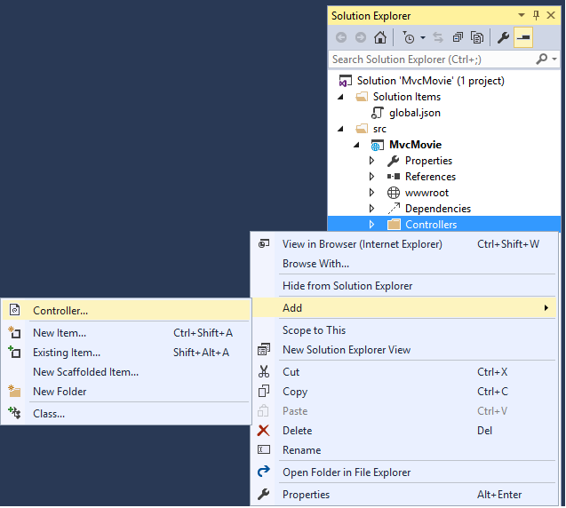
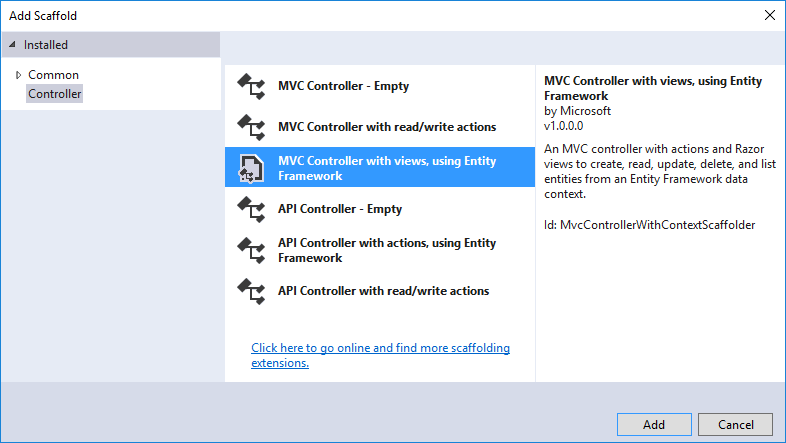
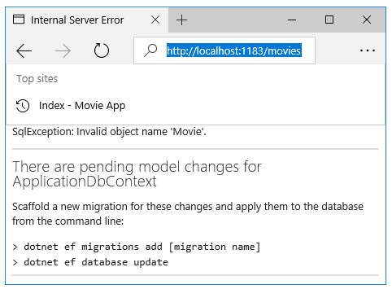
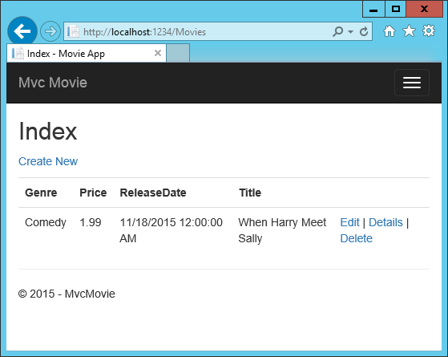

Adding a model¶
In this section you’ll add some classes for managing movies in a database. These classes will be the “Model” part of the MVC app.
You’ll use a .NET Framework data-access technology known as the Entity Framework Core to define and work with these data model classes. Entity Framework Core (often referred to as EF Core) features a development paradigm called Code First. You write the code first, and the database tables are created from this code. Code First allows you to create data model objects by writing simple classes. (These are also known as POCO classes, from “plain-old CLR objects.”) The database is created from your classes. If you are required to create the database first, you can still follow this tutorial to learn about MVC and EF app development.
Adding data model classes¶
In Solution Explorer, right click the Models folder > Add > Class. Name the class Movie and add the following properties:
using System;
namespace MvcMovie.Models
{
public class Movie
{
public int ID { get; set; }
public string Title { get; set; }
public DateTime ReleaseDate { get; set; }
public string Genre { get; set; }
public decimal Price { get; set; }
}
}
In addition to the properties you’d expect to model a movie, the ID field is required by the DB for the primary key. Build the project. If you don’t build the app, you’ll get an error in the next section. We’ve finally added a Model to our MVC app.
Scaffolding a controller¶
In Solution Explorer, right-click the Controllers folder > Add > Controller.
In the Add Scaffold dialog, tap MVC Controller with views, using Entity Framework > Add.
Complete the Add Controller dialog
- Model class: Movie(MvcMovie.Models)
- Data context class: ApplicationDbContext(MvcMovie.Models)
- Views:: Keep the default of each option checked
- Controller name: Keep the default MoviesController
- Tap Add
The Visual Studio scaffolding engine creates the following:
- A movies controller (Controllers/MoviesController.cs)
- Create, Delete, Details, Edit and Index Razor view files (Views/Movies)
Visual Studio automatically created the CRUD (create, read, update, and delete) action methods and views for you (the automatic creation of CRUD action methods and views is known as scaffolding). You’ll soon have a fully functional web application that lets you create, list, edit, and delete movie entries.
Run the app and click on the Mvc Movie link. You’ll get the following error:
That’s a great error message, we’ll follow those instructions to get the database ready for our Movie app.
Use data migrations to create the database¶
Open a command prompt in the project directory (MvcMovie/src/MvcMovie). Follow these instructions for a quick way to open a folder in the project directory.
- Open a file in the root of the project (for this example, use Startup.cs.)
- Right click on Startup.cs > Open Containing Folder.
- Shift + right click a folder > Open command window here
- Run
cd ..to move back up to the project directory
Run the following commands in the command prompt:
dotnet ef migrations add Initial
dotnet ef database update
dotnet(.NET Core) is a cross-platform implementation of .NET. You can read about it here.dotnet ef migrations add InitialRuns the Entity Framework .NET Core CLI migrations command and creates the initial migration. The parameter “Initial” is arbitrary, but customary for the first (initial) database migration. This operation creates the Data/Migrations/2016<date-time>_Initial.cs file containing the migration commands to add (or drop) the Movie table to the database.dotnet ef database updateUpdates the database with the migration we just created.
Test the app¶
- Run the app and tap the Mvc Movie link
- Tap the Create New link and create a movie
Note
You may not be able to enter decimal points or commas in the Price field. To support jQuery validation for non-English locales that use a comma (”,”) for a decimal point, and non US-English date formats, you must take steps to globalize your app. See Additional resources for more information. For now, just enter whole numbers like 10.
Tapping Create causes the form to be posted to the server, where the movie information is saved in a database. You are then redirected to the /Movies URL, where you can see the newly created movie in the listing.
Create a couple more movie entries. Try the Edit, Details, and Delete links, which are all functional.
Examining the Generated Code¶
Open the Controllers/MoviesController.cs file and examine the generated Index method. A portion of the movie controller with the Index method is shown below:
public class MoviesController : Controller
{
private readonly ApplicationDbContext _context;
public MoviesController(ApplicationDbContext context)
{
_context = context;
}
public async Task<IActionResult> Index()
{
return View(await _context.Movie.ToListAsync());
}
The constructor uses Dependency Injection to inject the database context into the controller. The database context is used in each of the CRUD methods in the controller.
A request to the Movies controller returns all the entries in the Movies table and then passes the data to the Index view.
Strongly typed models and the @model keyword¶
Earlier in this tutorial, you saw how a controller can pass data or objects to a view template using the ViewData dictionary. The ViewData dictionary is a dynamic object that provides a convenient late-bound way to pass information to a view.
MVC also provides the ability to pass strongly typed objects to a view template. This strongly typed approach enables better compile-time checking of your code and richer IntelliSense in Visual Studio (VS). The scaffolding mechanism in VS used this approach (that is, passing a strongly typed model) with the MoviesController class and view templates when it created the methods and views.
Examine the generated Details method in the Controllers/MoviesController.cs file:
// GET: Movies/Details/5
public async Task<IActionResult> Details(int? id)
{
if (id == null)
{
return NotFound();
}
var movie = await _context.Movie.SingleOrDefaultAsync(m => m.ID == id);
if (movie == null)
{
return NotFound();
}
return View(movie);
}
The id parameter is generally passed as route data, for example http://localhost:1234/movies/details/1 sets:
- The controller to the
moviescontroller (the first URL segment) - The action to
details(the second URL segment) - The id to 1 (the last URL segment)
You could also pass in the id with a query string as follows:
http://localhost:1234/movies/details?id=1
If a Movie is found, an instance of the Movie model is passed to the Details view:
return View(movie);
Examine the contents of the Views/Movies/Details.cshtml file:
@model MvcMovie.Models.Movie
@{
ViewData["Title"] = "Details";
}
<h2>Details</h2>
<div>
<h4>Movie</h4>
<hr />
<dl class="dl-horizontal">
<dt>
@Html.DisplayNameFor(model => model.Genre)
</dt>
<dd>
@Html.DisplayFor(model => model.Genre)
</dd>
<dt>
@Html.DisplayNameFor(model => model.Price)
</dt>
<dd>
@Html.DisplayFor(model => model.Price)
</dd>
<dt>
@Html.DisplayNameFor(model => model.ReleaseDate)
</dt>
<dd>
@Html.DisplayFor(model => model.ReleaseDate)
</dd>
<dt>
@Html.DisplayNameFor(model => model.Title)
</dt>
<dd>
@Html.DisplayFor(model => model.Title)
</dd>
</dl>
</div>
<div>
<a asp-action="Edit" asp-route-id="@Model.ID">Edit</a> |
<a asp-action="Index">Back to List</a>
</div>
By including a @model statement at the top of the view template file, you can specify the type of object that the view expects. When you created the movie controller, Visual Studio automatically included the following @model statement at the top of the Details.cshtml file:
@model MvcMovie.Models.Movie
This @model directive allows you to access the movie that the controller passed to the view by using a Model object that’s strongly typed. For example, in the Details.cshtml template, the code passes each movie field to the DisplayNameFor and DisplayFor HTML Helpers with the strongly typed Model object. The Create and Edit methods and view templates also pass a Movie model object.
Examine the Index.cshtml view template and the Index method in the Movies controller. Notice how the code creates a List object when it calls the View method. The code passes this Movies list from the Index action method to the view:
public async Task<IActionResult> Index()
{
return View(await _context.Movie.ToListAsync());
}
When you created the movies controller, Visual Studio automatically included the following @model statement at the top of the Index.cshtml file:
@model IEnumerable<MvcMovie.Models.Movie>
The @model directive allows you to access the list of movies that the controller passed to the view by using a Model object that’s strongly typed. For example, in the Index.cshtml template, the code loops through the movies with a foreach statement over the strongly typed Model object:
@model IEnumerable<MvcMovie.Models.Movie>
@{
ViewData["Title"] = "Index";
}
<h2>Index</h2>
<p>
<a asp-action="Create">Create New</a>
</p>
<table class="table">
<thead>
<tr>
<th>
@Html.DisplayNameFor(model => model.Genre)
</th>
<th>
@Html.DisplayNameFor(model => model.Price)
</th>
<th>
@Html.DisplayNameFor(model => model.ReleaseDate)
</th>
<th>
@Html.DisplayNameFor(model => model.Title)
</th>
<th></th>
</tr>
</thead>
<tbody>
@foreach (var item in Model) {
<tr>
<td>
@Html.DisplayFor(modelItem => item.Genre)
</td>
<td>
@Html.DisplayFor(modelItem => item.Price)
</td>
<td>
@Html.DisplayFor(modelItem => item.ReleaseDate)
</td>
<td>
@Html.DisplayFor(modelItem => item.Title)
</td>
<td>
<a asp-action="Edit" asp-route-id="@item.ID">Edit</a> |
<a asp-action="Details" asp-route-id="@item.ID">Details</a> |
<a asp-action="Delete" asp-route-id="@item.ID">Delete</a>
</td>
</tr>
}
</tbody>
</table>
Because the Model object is strongly typed (as an IEnumerable<Movie> object), each item in the loop is typed as Movie. Among other benefits, this means that you get compile-time checking of the code and full IntelliSense support in the code editor:
You now have a database and pages to display, edit, update and delete data. In the next tutorial, we’ll work with the database.